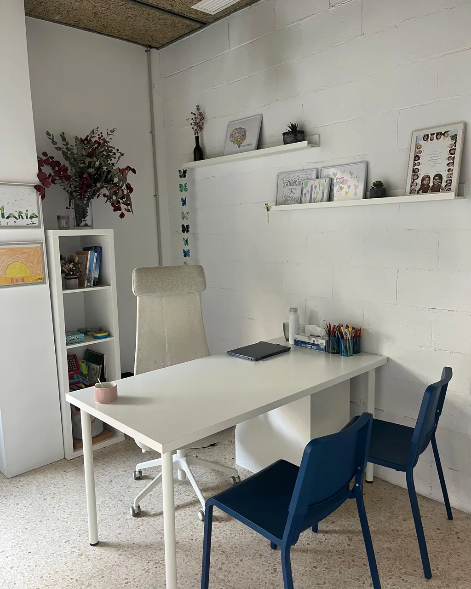

Logopèdia
Parla, llenguatge, veu, lectura i escriptura. Avaluació i intervenció per a infància i adolescència.
Veure servei →La banda del grup més vinculada al creixement: prevenció, aprenentatge i suport psicològic i educatiu per a infància, adolescència i famílies.
Com ho entenem
A l'Institut treballem el que envolta l'aprenentatge: el llenguatge, l'atenció, la lectura i l'escriptura, la manera de relacionar-se, la gestió de les emocions i el paper de la família i l'escola.
Quan hi ha una dificultat, la situem: fem avaluació quan cal, intervenció quan ajuda, i coordinació amb el centre educatiu perquè el que treballem aquí tingui continuïtat allà.
Si el cas necessita una mirada clínica o seguiment psiquiàtric, la derivació cap a Pragma Clínic és interna: la persona no torna a començar de zero.

Serveis
Cada servei té la seva pàgina amb el detall del procés, a qui s'adreça i com es concreta.
Parla, llenguatge, veu, lectura i escriptura. Avaluació i intervenció per a infància i adolescència.
Veure servei →Suport a l'aprenentatge, tècniques d'estudi i treball sobre dificultats específiques.
Veure servei →Acompanyament emocional per a infants i adolescents, i orientació a famílies.
Veure servei →Suport a Primària i ESO centrat en el mètode, els hàbits i l'autonomia.
Veure servei →Espais grupals per treballar la relació amb els altres i la gestió emocional.
Veure servei →Procés multidisciplinari per entendre què està passant i com acompanyar-ho.
Veure servei →També treballem dificultats de neurodesenvolupament, TEA, TDA/TDAH i trastorns específics de l'aprenentatge. Si tens dubtes sobre on encaixa el teu cas, fes servir l'orientador.
A qui ens adrecem
Des dels primers senyals a l'escola bressol o Primària fins a les dificultats que apareixen amb els cursos.
Aprenentatge, organització, autoestima i relacions en una etapa de molts canvis.
Orientació per acompanyar des de casa, amb pautes concretes i seguiment.
Un primer pas
Escriu-nos i concretem una primera entrevista per situar què necessiteu.
Demanar hora